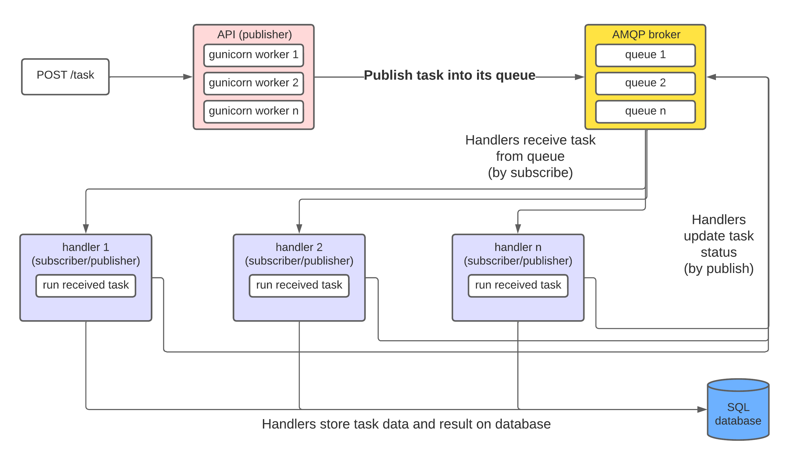

Introduction
pytasks is a complete and customizable microservice for running computational tasks on remote machines and viewing its results through an API.
 Notice: the documentation for this project is still being written. You may encounter uncomplete pages or sections.
Notice: the documentation for this project is still being written. You may encounter uncomplete pages or sections.
Current development
The project is currently on release 3.
You can view the source code and contribute by creating a pull request with your modifications or opening an issue.
Getting started
The microservice has two instances, an api exposed on the web, where users can send task requests to a queue, and a handler, which listens to the queue and execute the tasks.
To run pytasks with all of its dependencies in a testing environment, ensure you have docker and docker compose installed and then run the following command:
git clone https://github.com/brenopelegrin/pytasks.git &&
cd pytasks &&
export JWT_PRIVATE_PEM=$(cat ./examples/keys/jwtRS256.key) &&
export JWT_PUBLIC_PEM=$(cat ./examples/keys/jwtRS256.key.pub) &&
docker compose up -d
After the containers start, the API will be available at http://localhost:8080.
 For more instructions on how to customize your
For more instructions on how to customize your pytasks containers and how to run them, see Setting up.
Understanding the project with more depth
Overview
The project's main goal is to make cloud computing more accessible and facilitate its implementation.
pytasks provides a complete and customizable backend so that developers only have to worry about developing the tasks, not the backend that runs them.
It is based on solid and robust technologies, packages and frameworks. The API is built with Flask and served with gunicorn. The handler is built on top of Celery, enabling it to use various backends for the queue, such as Redis and RabbitMQ and various database backends for storing task results, such as PostgreSQL.
Overview fluxogram of pytasks

What exactly is a task?
Tasks are coded functions that receives arguments and return results, obbeying some specifications. They can be put together in packages (which we call taskpacks) and automatically installed and imported on deploy. The tasks need to have defined arguments with declared types, and the results should be serializable in JSON.
For example, the following function can be considered as a task:
@celery_app.task
def mySimpleTask(number1: int, number2: int):
addition = number1 + number2
multiplication = number1 * number2
return(
{
"addition": addition,
"multiplication": multiplication
}
)
A little more about the api
The API
Quick list of endpoints
| Endpoint | Method | Description |
|---|---|---|
/task/<taskId:uuid> |
GET |
Fetch task information |
/task |
POST |
Post a task to server |
/protected |
GET |
Fetch available protected tasks for your JWT token |
/token |
GET |
Generate JWT token from credentials |
For more detailed information on API endpoints and how to make requests, please see the API specification section.
A little more about the handler
The Handler